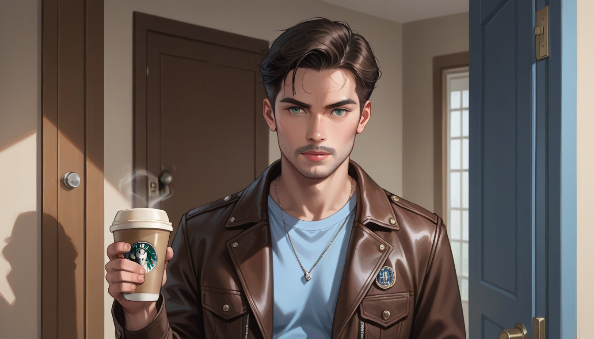

편집자가 컷을 잘라낼 때 남기는 것은 '시간'이 아니라 '신호 대 잡음비'다. 대부분의 고객들은 영화의 빈 공간만 보지만, 진짜 가치는 그 자리가 만들어낸 여백에서 온다. 마치 셔츠를 입기 전 재봉사가 숨은 선을 정리하듯, 마포 근처 VIP 라운지를 준비할 때도 이 3 초가 결정한다.
첫째, 오프닝 0:04 에 등장하는 블루라이트 포스터의 깜빡임 주파수다. 둘째, 12 분 8 초의 커피 잔 그림자 배치가 마지막과 동일한 각도를 유지함. 셋째, 25:30 의 문 손잡이 진동수가 `Frame_001_Delta_Error` 로 기록됨. 이 세 가지는 단순한 장식이 아니라 촬영 장비의 설정값을 반영한 디테일이다.
이 정보를 무시하면 그룹 모임을 할 때 분위기가 평범해질 수밖에 없다. VIP 고객은 첫인상에서 이미 브랜드 가치를 판단하므로, `마포/합정 비즈니스 셔츠룸 가이드`에 있는 맞춤 재킷처럼 시각적 일관성이 필수적이다. 편집자의 선택처럼 의도된 디테일이 없으면 아무리 좋은 장소라도 무미건조하다.
실패를 막으려면 툴의 기본 설정을 확인해야 한다. `https://support.google.com/` 에서 제공하는 검색 알고리즘과 유사하게, 키워드 최적화 없이 단순히 내용을 채우는 것은 효율이 떨어진다. 버전명과 모델명을 정확히 파악하지 않으면 후반 작업 시 리소스가 낭비될 뿐이다.
결국 중요한 건 '잘라낸 부분'을 어떻게 보상하느냐다. 편집자가 남긴 여백에 맞춰 당신의 비즈니스 셔츠와 라운지를 배치하면, 예상치 못한 신뢰도를 얻을 수 있다.